Chapter 7 Growth accounting
This section will guide you through the construction of an Excel spreadsheet and the calculation of the growth accounting decomposition of UK GDP (\(Y\)).
7.1 Growth accounting equation
Cobb-Douglas production function: \[Y_t = A_tK_t^\beta L_t^{1-\beta}\] where
- \(Y\) is total output
- \(A\) is total factor productivity
- \(K\) is the capital stock
- \(L\) is the number of hours worked
- \(\beta\) is the elasticity of output with respect to capital (elasticity of capital).
Growth accounting equation: \[g_Y = g_A + \beta g_K + (1-\beta)g_L \] where
- We will assume an elasticity of output with respect to capital equal to 0.3 (unless otherwise stated).
- We will estimate \(g_Y\), \(g_K\) and \(g_L\) using the following data in the Penn World Tables.
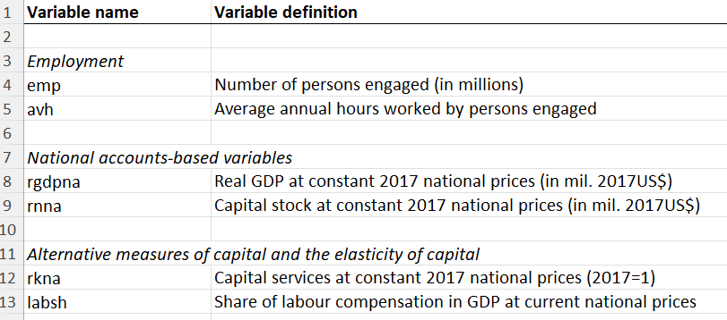
- \(g_A\) is not directly observable but can be estimated as the residual of the growth accounting equation: \[g_A = g_Y - \beta g_K - (1-\beta)g_L \] Note that the PWT database does contain an estimated series of TFP (denoted “ctfp” and “rtfpna”), but we will ignore them for the purpose of this exercise, which is to understand how such a series can be constructed using National Accounts data.
7.2 Variable selection and transformation
- Extract the relevant variables in a new sheet:
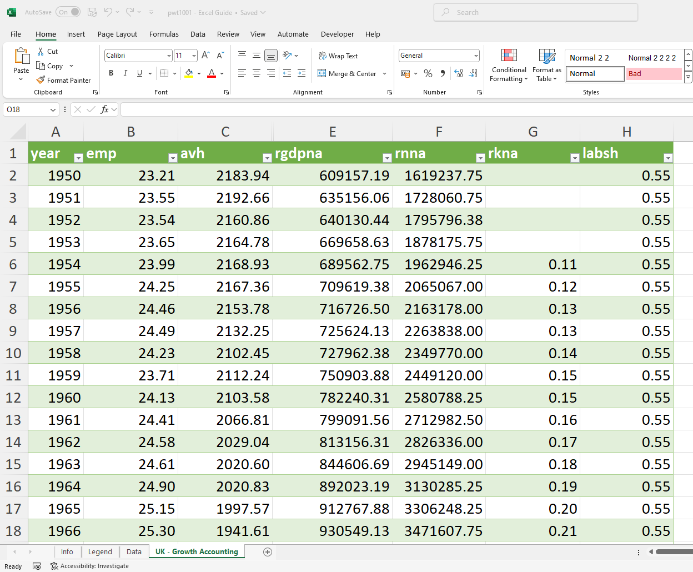
- Construct the total number of hours worked (“hours”) by multiplying the number of persons engaged (in millions) (“emp”) by the average number of hours worked per persons engaged (“avh”). This will be the labour input variable (“L”).
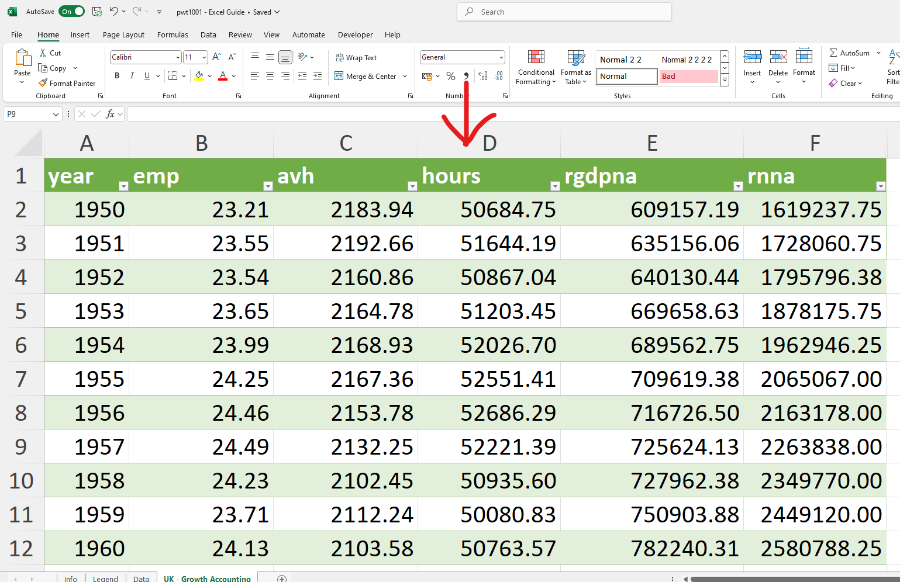
7.3 Results: annual decompositions
In this section, we will construct the growth rate of total factor productivity, \(g_A\), decompose the growth rate of GDP, \(g_Y\), into the contribution of capital accumulation, \(\beta g_K\), the contribution of hours worked, \((1-\beta)g_L\), and the contribution of TFP growth, \(g_A\), and show how to present the results effectively.
- Calculate the annual growth rate of output, the capital stock and hours worked using the formula for the growth rate of variable \(x\): \(g_{x,t} = \frac{x_t}{x_{t-1}} - 1\) (see section 3.2 for how to calculate growth rates).
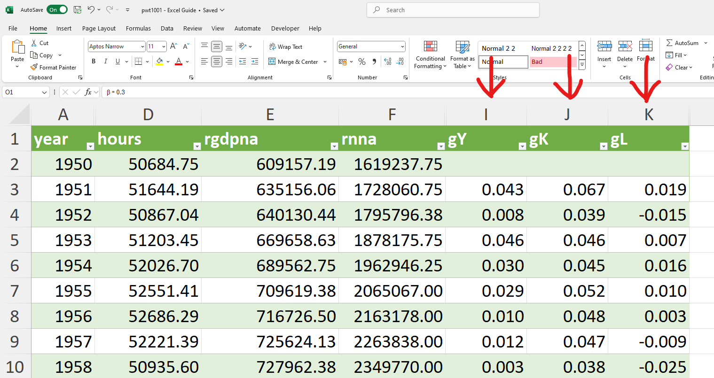
Alternatively you may use the formula using the logarithmic approximation to calculate growth rates (see Section 3.3.).
Calculate the TFP growth rate (\(g_A\)) as the residual of the growth accounting equation: \[g_A = g_Y - 0.3g_K - 0.7g_L\] 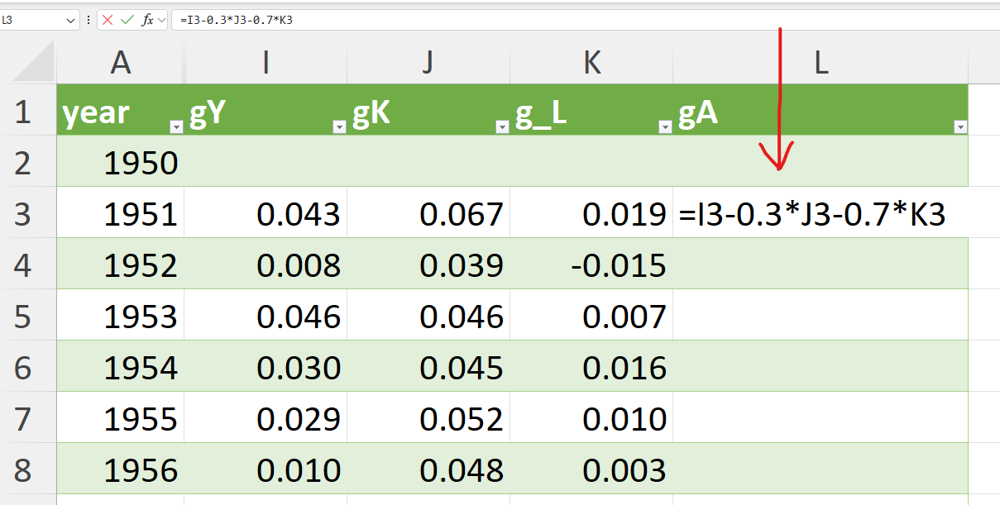
Calculate the contribution of each factor to the growth of output:
- capital accumulation: \(\beta g_K = 0.3g_K\)
- hours worked: \((1-\beta)g_L = 0.7g_L\)
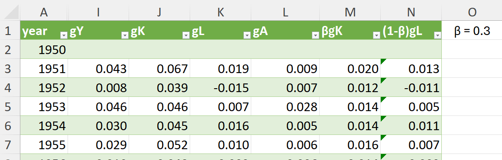
- Plot the results (see Section 5 for how to create and format a line plot)
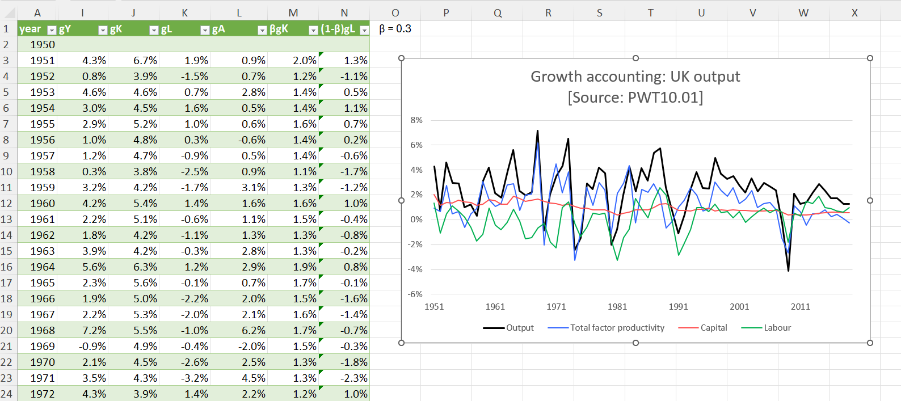
7.4 Results: average decompositions
Sometimes, it will be informative to decompose the average growth rates of output over long periods of time (decades), removing the effects of short-run fluctuations and allowing the analysis to focus on long-run trends.
Identify meaningful subperiods either using a plot of the natural logarithm to identify turning points in the growth experience of a country or based on significant country specific events (eg the fall of the Berlin wall and the reunification in Germany in 1990) or based on significant world events (eg the slowdown in productivity growth in developed economies in the early 1970s). In this example, we will decompose the growth of UK output over the full sample period (1950-2019) and over 3 subperiods (1950-1973, 1973-2007, 2007-2019).
Select the data by hiding the irrelevant rows:
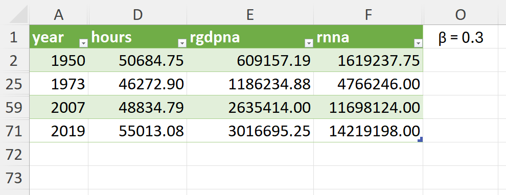
- Calculate the average growth rate of output, capital and labour over the full sample period and each subperiod using the formula for the compound average growth rate of variable \(x\): \(g_{x,t-s} = \left(\frac{x_s}{x_{t}}\right)^{\frac{1}{s-t}} - 1\) or its logarithmic approximation (see section 6.1 for how to calculate compound annual growth rates).
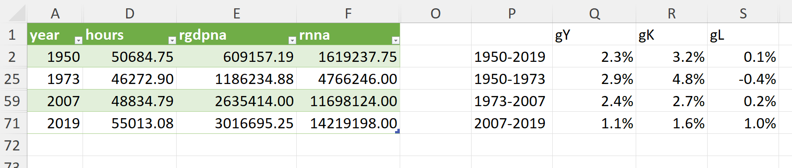
- Calculate average growth rates of TFP and the contributions of capital and labour to the growth of output using the growth accounting equation.
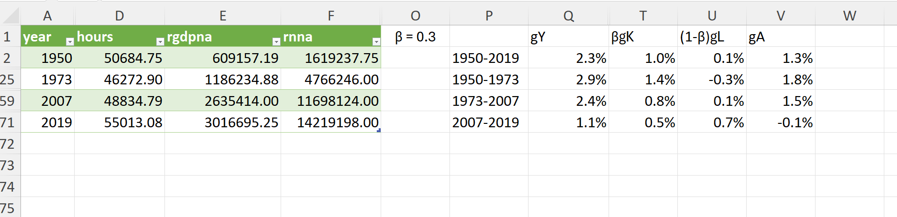
- Present the results in a table, a column chart or any other chart you find useful to convey the information.
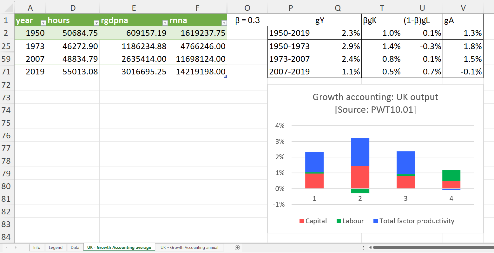
- To produce the column chart: